Everything you do on the till, shown with a picture of every screen. Written in plain English. Follow the steps in order and you cannot go wrong.
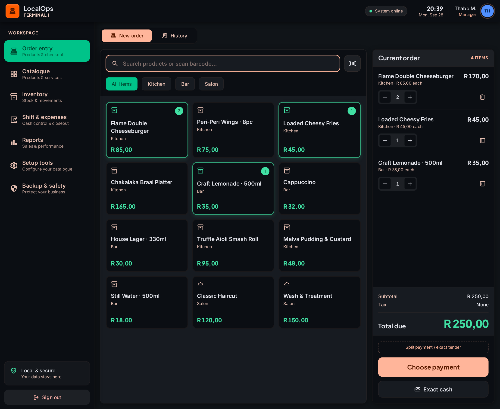
Start here
This manual shows every screen in LocalOps POS. Each picture is a real screenshot of the program. The example shop is called Moko’s Lifestyle Centre. Your shop name, your items and your prices will be different, but every button sits in the same place.
| If you are… | Read this |
|---|---|
| A new teller | Chapters 3 to 9, then the Quick reference card at the back. That is everything you need for a normal shift. |
| A trainer | Chapter 19. It contains a 45-minute lesson plan, practice exercises and a sign-off checklist. |
| An owner or manager | All of it, especially chapters 12 to 17 (catalogue, stock, money and backups). |
| Word | What it means |
|---|---|
| Till / terminal | This computer. Every sale is recorded against it. |
| Shift | One period of selling on this till, from the moment you count the opening cash to the moment you count the closing cash. |
| Order (cart) | The list of items the customer is buying right now, on the right-hand side of the sale screen. |
| Receipt | The record of a finished sale. It has a number, for example PREVIEW-0001. |
| Refund | Giving money back for part of a sale. |
| Void | Reversing a whole sale. |
| Department | A part of the business that sells, such as Kitchen, Bar or Salon. |
| Catalogue | The list of everything the business can sell. |
| Stock / inventory | How much of each product you physically have. |
| Variance | The difference between the cash the system expected and the cash you counted. |
Background
LocalOps POS is a till program that runs on one Windows computer. It works without the internet. All the information lives in a database file on that same computer.
| Rule | Why it matters to you |
|---|---|
| Nothing is ever deleted | A mistake is corrected by a refund or a void, and both the mistake and the correction stay in the history. This protects honest staff. |
| The money must balance | The Pay button stays switched off until the amounts you enter add up exactly to the total. |
| A shift must be open | No shift, no sales. Opening the shift is how the system knows how much cash was in the drawer when you started. |
| The data stays here | There is no cloud. If this computer is lost and there is no backup, the business history is lost. Make backups. |
Do not promise a customer any of the following, because the screens do not exist yet:
Every shift starts here
When you start LocalOps POS on a computer that already has a business, you see the sign-in screen. Nothing can be done until you sign in with your own name and PIN.
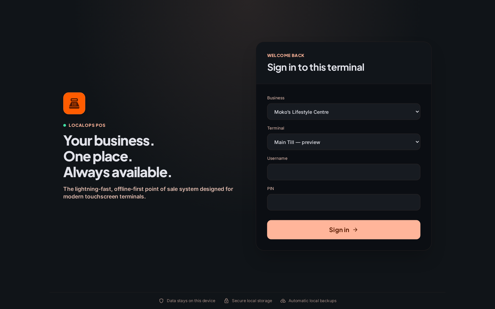
Never use another person’s username and PIN, and never tell anyone yours — not even a manager. Every sale, refund and expense is recorded under the name that is signed in. If you share your PIN, you are responsible for what someone else does with it.
After five wrong PINs the account is locked for five minutes. Wait; do not keep trying. Also check that you picked the right business and terminal before you blame the PIN.
Sign out is the last button at the bottom of the left-hand menu. Press it every single time you walk away from the till, even for a minute. If the till is left alone for five minutes without activity, the session ends by itself and you must sign in again.
Signing out does not close the shift and does not lose any sale. A finished sale is saved the moment you press Pay.
Orientation
Every screen in LocalOps POS is built the same way: a strip at the top, a menu on the left, and the work area in the middle. Learn these three parts and you can find anything.
Use the top strip to answer three questions in one glance: Am I on the right till? What is the time? Who is signed in? If the name is not yours, sign out and sign in again before you sell anything.
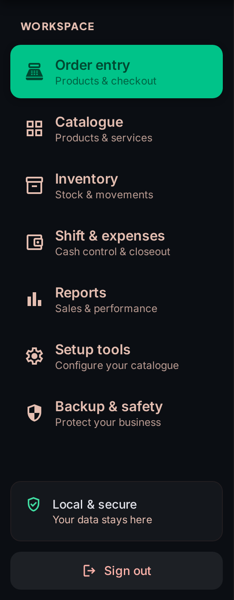
| Menu item | What you do there |
|---|---|
| Order entry | Sell, take payment, print the receipt, refund or void. |
| Catalogue | Add products and services and see the item list. |
| Inventory | Stock on hand, receive stock, transfers, waste, counts. |
| Shift & expenses | Open and close the till, record expenses. |
| Reports | Sales, profit, payments, stock value, CSV export. |
| Setup tools | Categories, units, packaging, recipes, which department sells what. |
| Backup & safety | Health checks, make a backup, restore a backup. |
A teller normally only uses Order entry and Shift & expenses. The other pages may open but refuse an action with a “Permission denied” message if your account is not allowed to do it. That is normal, not a fault.
The program talks to you with one wide bar above the work area:
When you see a red bar, read it and fix the cause. Do not press the button again and again — you may create the same transaction twice once the cause disappears.
First job of the day
A shift is the container for all the cash movement on this till. Until it is open, the sale screen shows a red Shift closed badge and nothing can be sold.
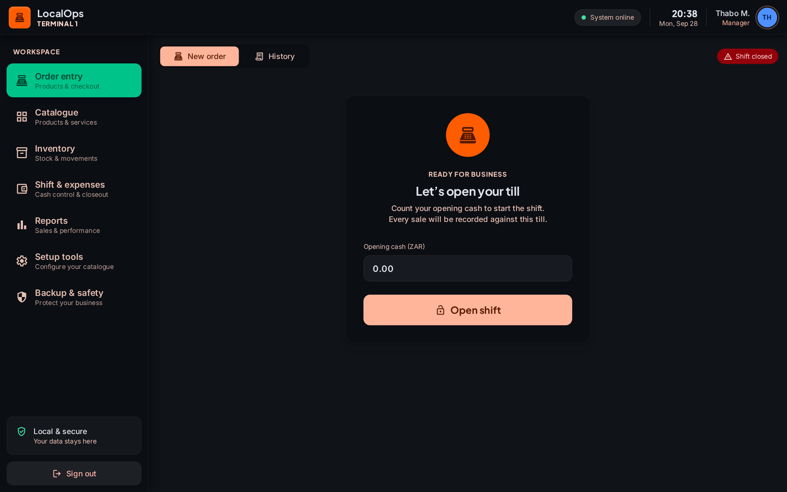
500.00, not 500,00.Enter the true counted amount, even if it is not the float you expected. If you enter a wrong opening amount, every cash figure for the whole shift will be wrong, and the variance at the end will blame the wrong person.
You can also open the shift from Shift & expenses. It is the same shift. One till can have only one shift open at a time.
Your main screen
This is where you will spend almost all of your time. It has two tabs at the top: New order (sell) and History (past sales, refunds and voids).
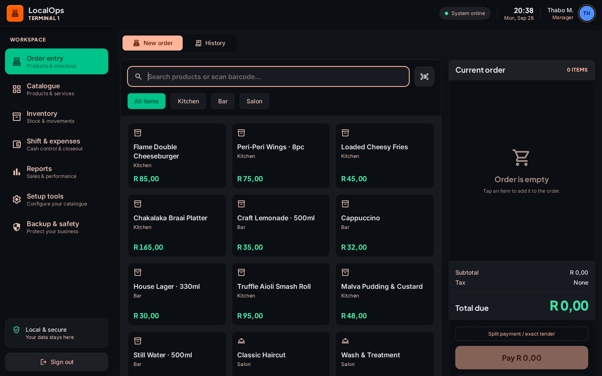
| Part of the screen | What it is for |
|---|---|
| Search products or scan barcode… | Type part of a name to filter the buttons, or scan a barcode to add the item straight away. |
| Barcode icon (right of the search bar) | Puts the cursor back in the search bar, ready for the scanner. |
| All items / Kitchen / Bar / Salon | Department filter. “All items” shows everything. Your department names will differ. |
| Item buttons | One button per item, showing its name, department and price. A green number in the corner shows how many are already in the order. |
| Current order (right) | The customer’s basket, with a line for every item, the subtotal, the tax and the Total due. |
| Split payment / exact tender | Opens the payment boxes so you can type amounts per method. |
| Choose payment / Pay R… | The big button that finishes the sale. It only works when the money balances. |
| Exact cash | One press fills in the exact cash amount for the whole total. |
The little icon on each item button tells you what it is: a box for a product (something you hold in your hand, stock is reduced) and a serving dome for a service (work you do, such as a haircut).
The main job
There are three ways to add an item. Use whichever is fastest:
| Way | How |
|---|---|
| Tap the button | Press the item on the grid. Press it again for a second one. |
| Scan the barcode | Point the scanner at the barcode. The item is added by itself. (The scanner types the number and presses Enter for you.) |
| Type and press Enter | Type the barcode, SKU or product code in the search bar and press Enter. |
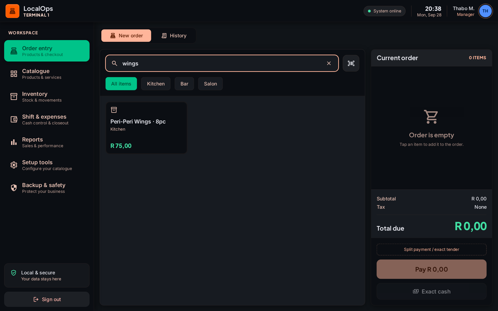
wings leaves only the matching items on the
grid. Clear the box to see everything again.Typing a name and pressing Enter does not add an item. Enter only works on an exact barcode, SKU or product code. If nothing matches you see the red message “No local item matches …”. When that happens, clear the box and tap the item button instead.
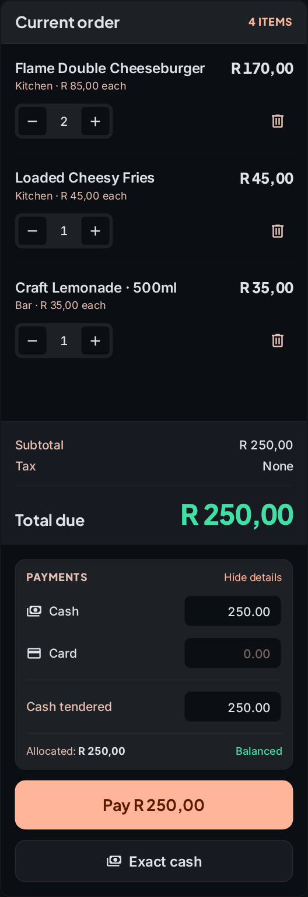
Before you say the price, look at the order panel and check the number of items at the top right of the panel against what is on the counter. Most mistakes are a double tap, not a wrong price.
Money
The rule is simple: what you type must add up to the Total due. When it does, the panel says Balanced and the big button turns on.
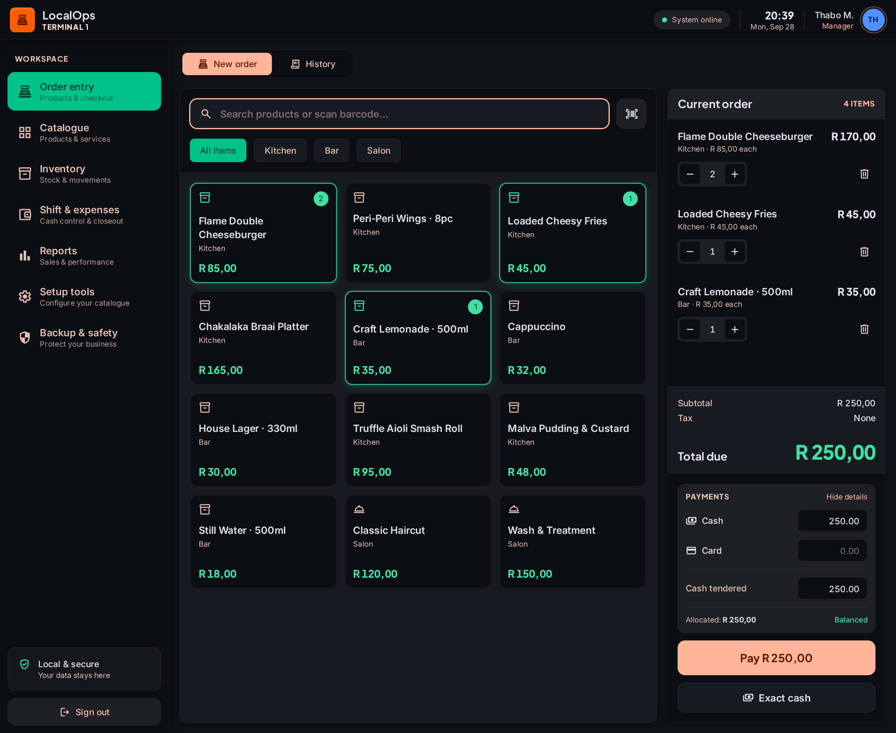
300.00.0.00.You may not enter more than the total on a card, EFT or other line. Only cash may be over the amount, because only cash gives change.
200.00.50.00.100.00.| Reason | What to do |
|---|---|
| The order is empty | Add at least one item. |
| No shift is open | Open the shift (chapter 5). |
| The amounts do not add up | Look at the Allocated line and fix the numbers. |
| A box has bad text in it | Use only digits and one full stop, with two decimals: 85.00. |
| The sale is busy saving | Wait. Never press twice. |
Never type a cash amount that the customer did not give you to make the sale “balance”. The drawer will be short at the end of the shift and the variance will point straight at your shift.
Proof of the sale
The moment the sale is saved, a green bar confirms the receipt number and the receipt appears under the till.
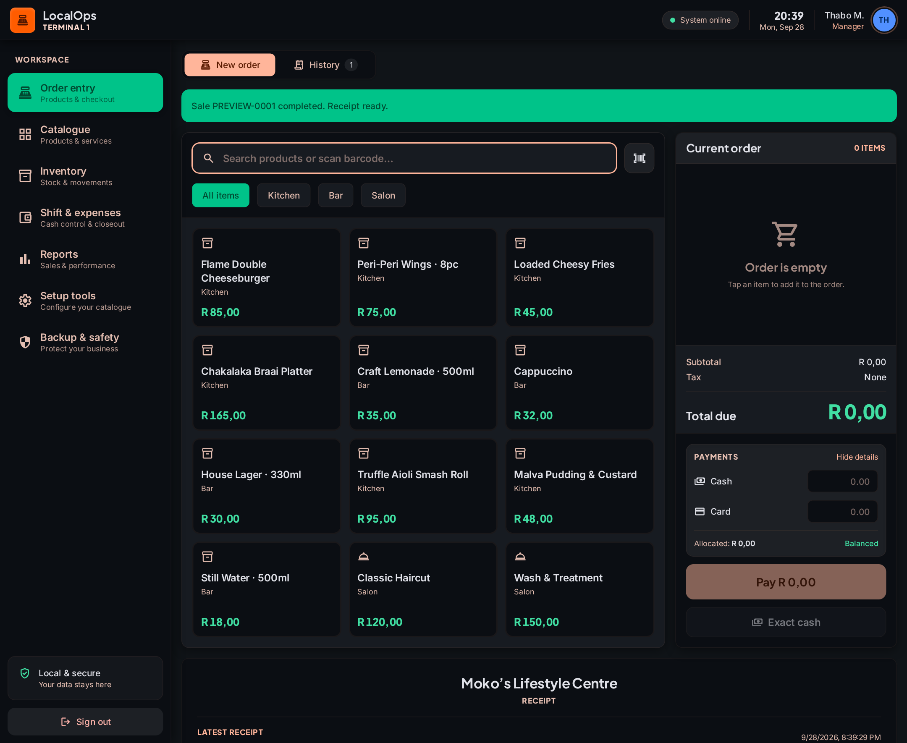
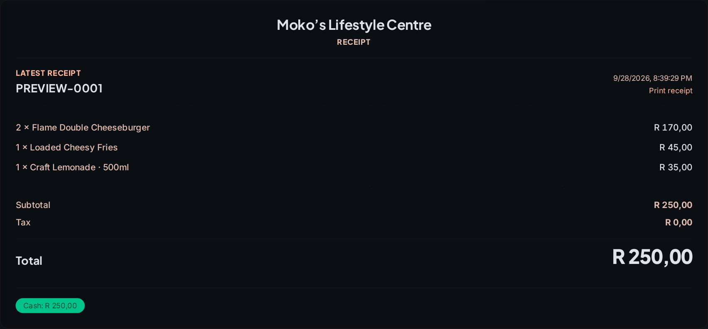
Print the receipt before you start the next customer. This version cannot re-print an old receipt from the History tab.
If the printer jams or has no paper, the sale is still safely recorded. Fix the printer, then write the receipt number on a slip for the customer and explain politely.
Corrections
Use History to give money back. A refund returns part of a sale. A void reverses the whole sale. Neither one deletes anything: the original receipt stays exactly as it was and the reversal is added next to it.
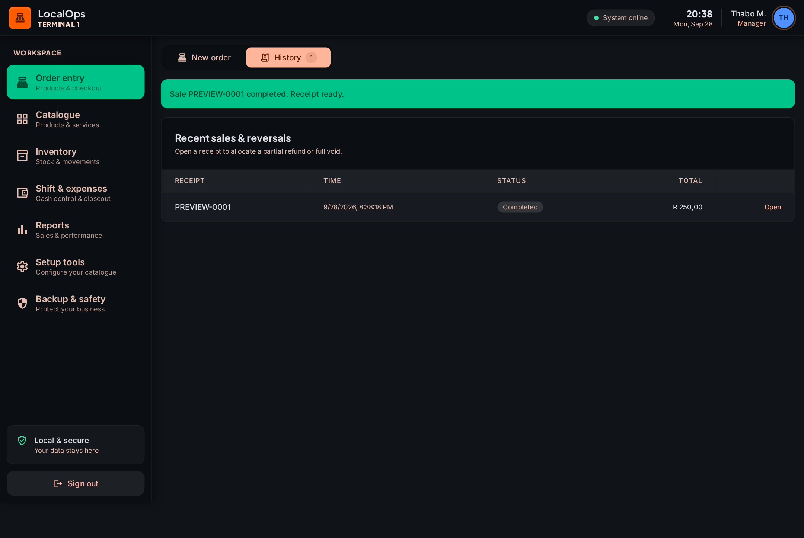
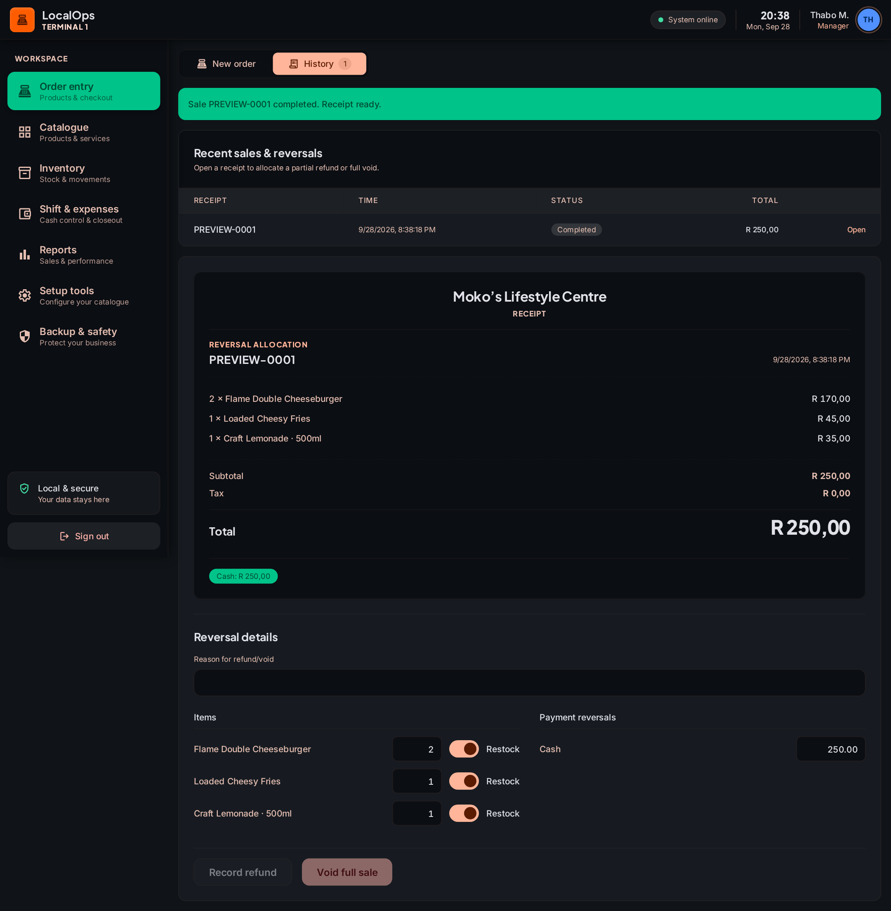
0 on the lines you are not refunding.0.00 where nothing goes back. Normally you refund to the same method the customer paid with.| If the screen refuses | The reason is usually |
|---|---|
| Buttons are grey | No shift is open, or the reason box is empty. |
| “Permission denied” | Your account may not refund or void. Call a supervisor — do not use their PIN. |
| “exceeds refundable …” | You are trying to give back more items or more money than is left on that sale. Check what was already refunded. |
Never refund cash for a card sale and never “fix” a mistake by ringing up a negative-looking sale. Always use the refund or void screen so the trail is honest and complete.
Owner / installer
You only ever see this screen once per computer: the very first time LocalOps POS opens with an empty database. A teller will normally never see it.
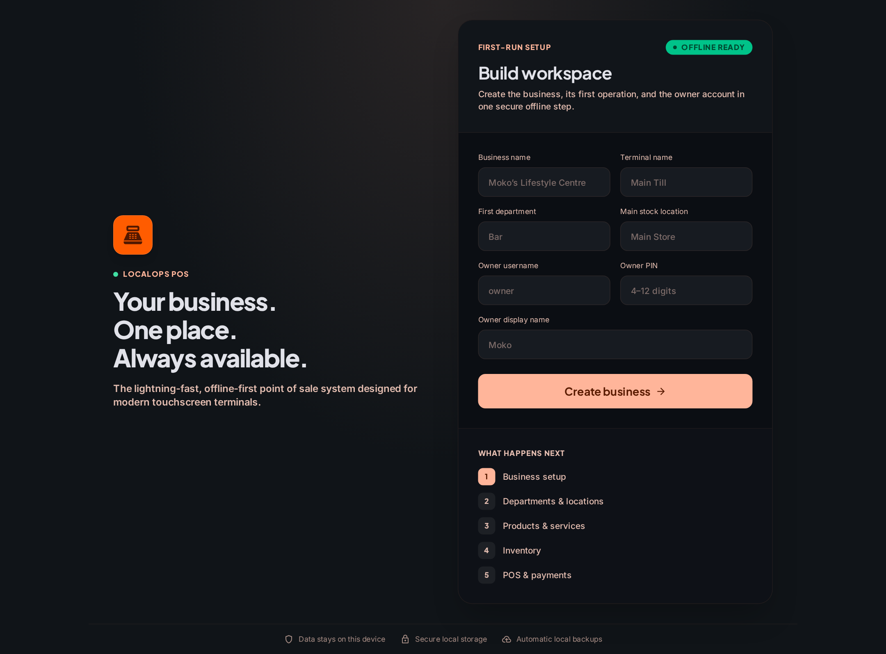
| Box | What to type |
|---|---|
| Business name | The trading name, for example Moko’s Lifestyle Centre. |
| Terminal name | A name for this computer, for example Main Till. |
| First department | The first selling area, for example Bar, Kitchen or Salon. |
| Main stock location | Where stock is kept, for example Main Store. |
| Owner username | The sign-in name for the owner, for example owner. |
| Owner PIN | 4 to 12 digits. Write it down and lock it away. |
| Owner display name | The name shown at the top right of the screen, for example Moko. |
The panel What happens next shows the order of work after setup: business setup → departments and locations → products and services → inventory → POS and payments.
The owner PIN cannot be read back out of the program later. If it is lost, only your administrator can help.
Manager
The catalogue is the list of everything the business can sell. The three counters at the top tell you how many active items, products and services exist.
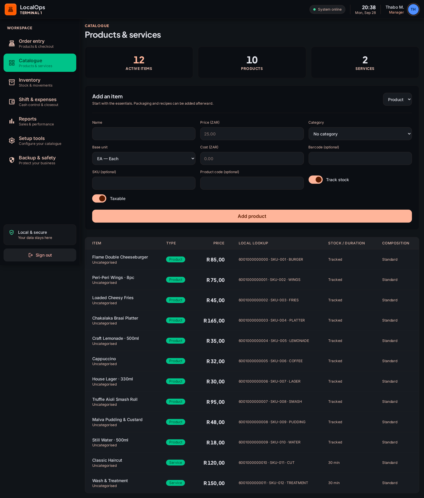
25.00.Switch the list to Service, then type the name, price, optional category and optional duration in minutes, set Taxable, and press Add service. A service has no stock of its own, but it can eat stock through a recipe (for example, a treatment that uses 30 ml of product).
| Column | Meaning |
|---|---|
| Item | Name and category. |
| Type | Product or Service. |
| Price | The catalogue price before any department override. |
| Local lookup | Barcode · SKU · product code — what a scanner or the search bar can match. |
| Stock / duration | Tracked for stock items, or the service length in minutes. |
| Composition | Standard, or shows packaging and recipe information when set. |
There is no edit or delete button in this version. Check the spelling and the price before you press Add.
Manager
Setup tools is the workshop behind the catalogue. Five small panels, each with one job.
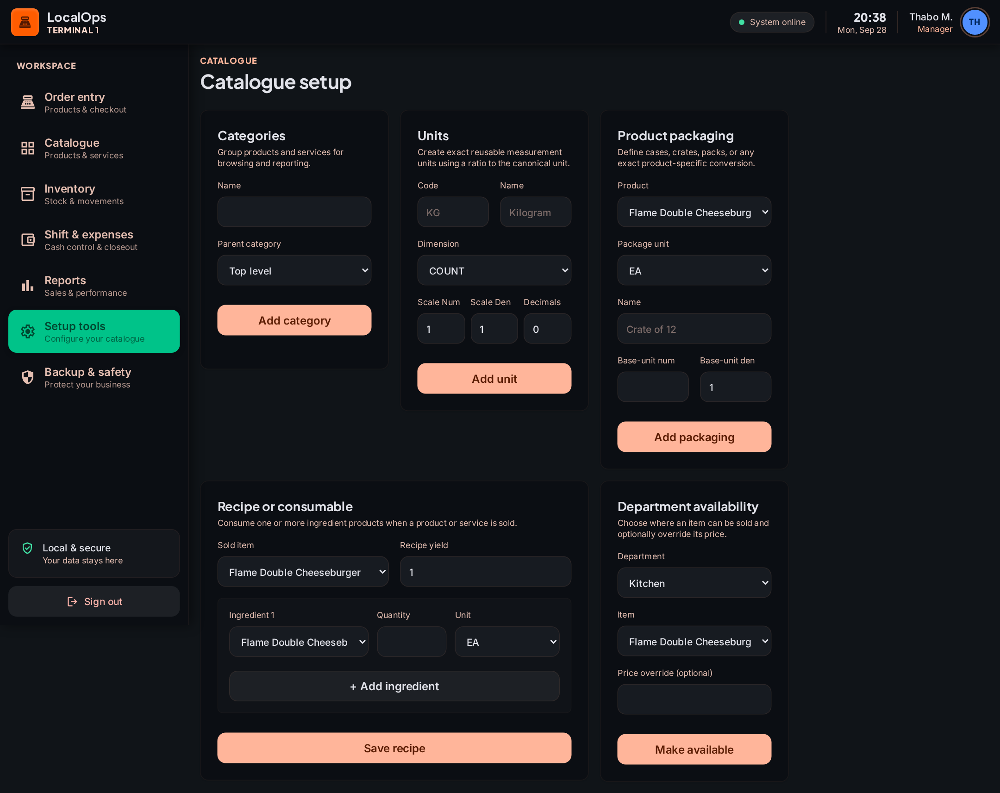
Type a Name, choose a Parent category (or leave it on Top level) and press Add category. Categories group items for browsing and reports, for example Drinks → Beer.
A unit is how you measure an item. Each unit has a Code (KG), a Name (Kilogram), a Dimension (COUNT, WEIGHT, VOLUME, LENGTH or TIME), a scale as a fraction, and how many Decimals are allowed.
| Unit | Dimension | Scale Num | Scale Den | Decimals |
|---|---|---|---|---|
| EA — Each | COUNT | 1 | 1 | 0 |
| G — Gram (the base) | WEIGHT | 1 | 1 | 3 |
| KG — Kilogram | WEIGHT | 1000 | 1 | 3 |
Units that must convert into one another must share the same dimension. The program refuses a conversion that is not mathematically exact.
Packaging says how a buying unit converts to the selling unit — for example a crate that holds 12 bottles.
Choose the Product, the Package unit, type a clear Name (Crate of 12), put
12 in Base-unit num and 1 in Base-unit den, then press
Add packaging. Receiving 2 crates then adds 24 bottles to stock.
A recipe takes ingredients out of stock when the item is sold.
1 when the ingredients make one sold unit.Saving a new recipe replaces the old one from that moment forward. Sales that already happened keep the recipe that was used at the time.
This is the step people forget. An item only appears on the till after you make it available:
Stock controller
Stock is kept as a ledger: a list of every movement that ever happened. The balance you see is the sum of that list, so it can always be explained.
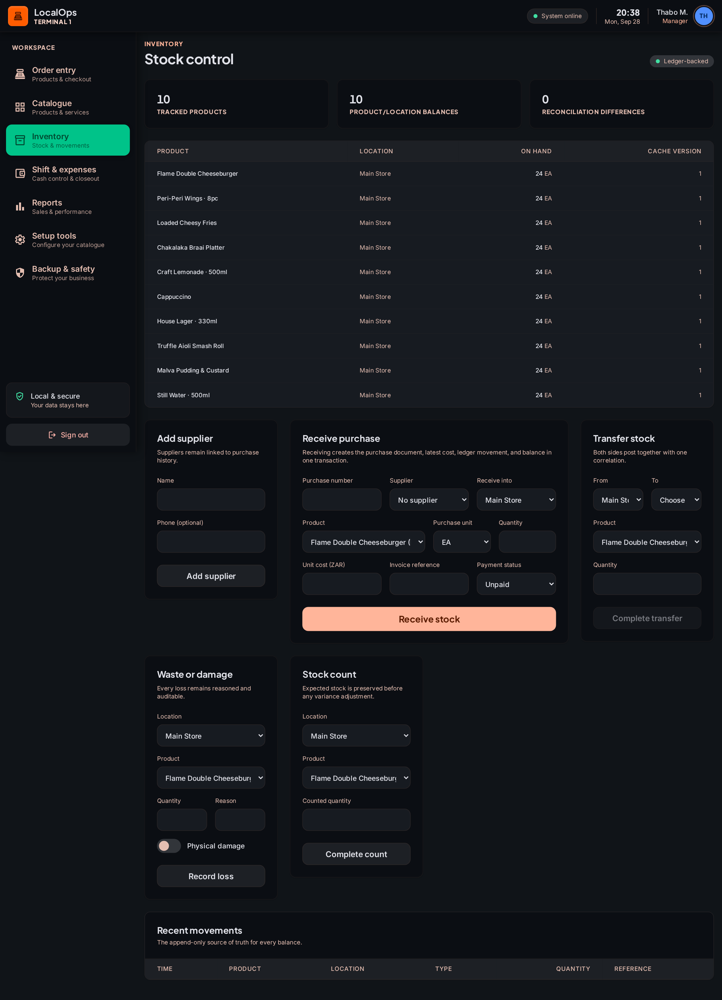
| Counter | Meaning |
|---|---|
| Tracked products | How many products have stock tracking switched on. |
| Product/location balances | How many product-and-place combinations exist. |
| Reconciliation differences | Must be 0. Anything else means a balance disagrees with the ledger — tell the owner and call support. |
Type the Name, optionally a Phone, and press Add supplier. Suppliers stay linked to the purchases you receive from them.
One press creates the purchase, updates the product’s latest cost, writes the stock movement and updates the balance. If anything is wrong, nothing at all is saved.
| Form | How to use it |
|---|---|
| Transfer stock | Choose From and a different To location, the product and the quantity, then Complete transfer. It stays switched off while the business has only one location. |
| Waste or damage | Choose the location and product, type the quantity lost and a clear Reason, switch on Physical damage if the item was broken, then Record loss. |
| Stock count | Choose the location and product, type the Counted quantity you physically counted and press Complete count. The system keeps the expected figure and posts only the difference. |
The table at the bottom is the truth behind every balance: time, product, location, movement type, quantity and reference. A positive quantity adds stock; a negative quantity takes it away.
Never invent a purchase to get past an “insufficient stock” message. Receive the real stock or do an authorised stock count. False receipts destroy the value of every report that follows.
Cash control
This page is where the drawer is opened, where money paid out of the drawer is recorded, and where the shift is counted and closed.
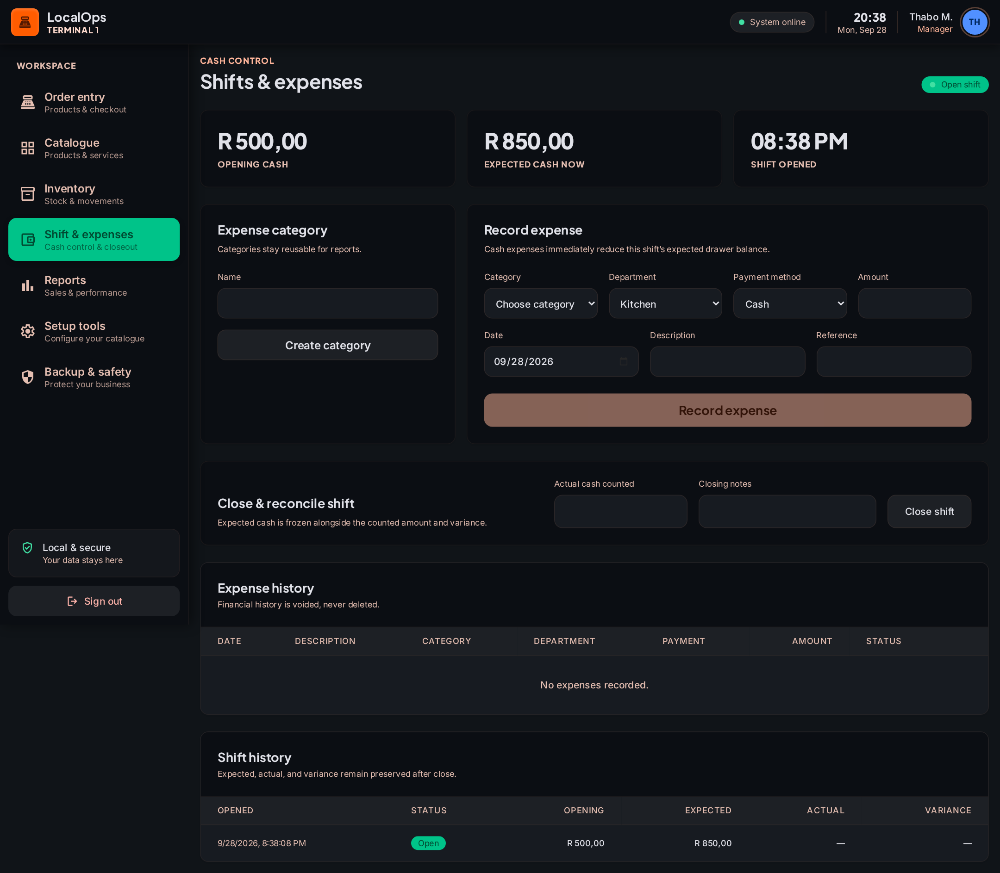
| Figure | Meaning |
|---|---|
| Opening cash | What you counted into the drawer when the shift opened. |
| Expected cash now | Opening cash + cash sales − cash refunds − cash expenses. This is what should be in the drawer at this moment. |
| Shift opened | The time the shift started. |
You need at least one expense category and an open shift first. To create a category, type a name such as Transport and press Create category.
A cash expense lowers Expected cash now immediately. Other methods do not touch the drawer.
Find the entry in Expense history, press Void, type the reason and confirm. The entry stays visible with a void status — financial history is voided, never deleted.
The shift history row then keeps the opening, expected, actual and variance figures for ever.
| Variance | Meaning | What to do |
|---|---|---|
| R 0,00 | Perfect. | Nothing. |
| Positive (over) | More cash than expected — change not given, or a sale rung up short. | Write a note and tell your supervisor. |
| Negative (short) | Less cash than expected — too much change, a missed sale, or an unrecorded payout. | Recount, check expenses, then report it the same day. |
Count the drawer without looking at the expected figure first. Then compare. This keeps the count honest.
Owner / manager
The business dashboard answers: what did we sell, what did we earn, what did we spend, and what is still on the shelf?
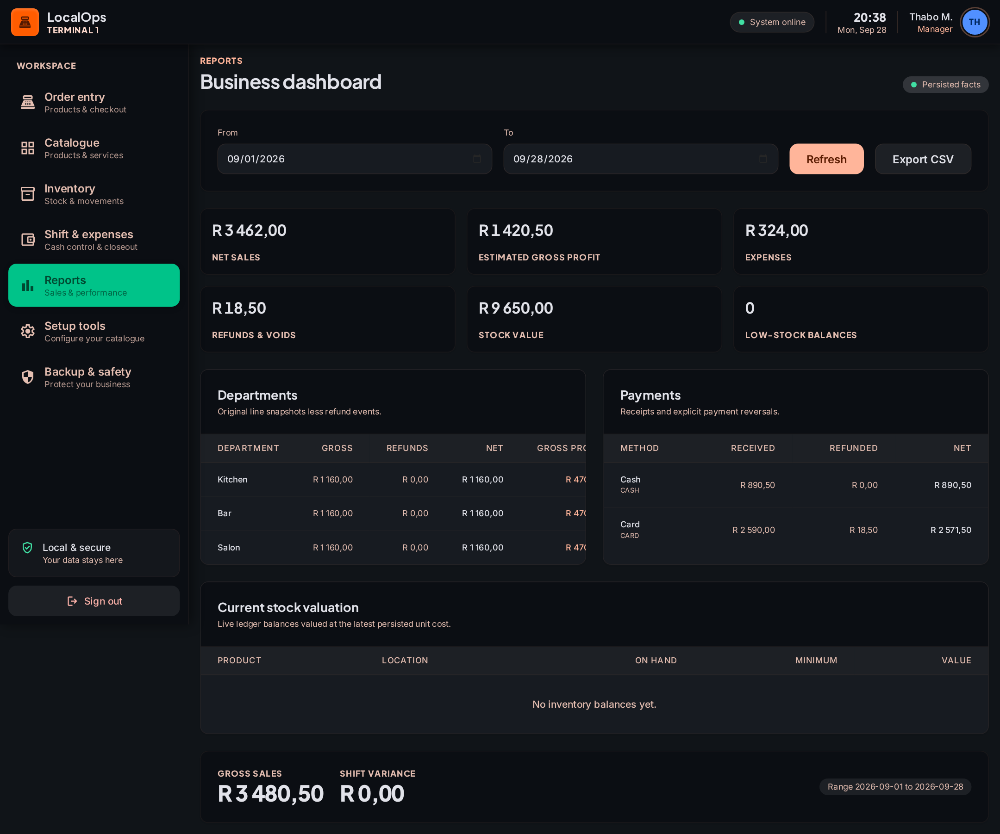
Set From and To, then press Refresh. The dashboard opens on the first day of this month up to today. The badge at the bottom right always repeats the range you are looking at.
| Card | Meaning |
|---|---|
| Net sales | Sales after refunds and voids. |
| Estimated gross profit | Sales less the recorded cost of the items sold. It is an estimate for management, not a financial statement. |
| Expenses | Operating expenses recorded in the period. |
| Refunds & voids | Money given back in the period. |
| Stock value | What is on the shelf right now, valued at the latest cost. |
| Low-stock balances | How many product balances are at or under their minimum. |
| Gross sales (bottom) | Sales before refunds. |
| Shift variance (bottom) | All shift variances in the period added together. |
Choose the range, press Export CSV and save the file. It is named
localops-report-YYYY-MM-DD-to-YYYY-MM-DD.csv and opens in any spreadsheet program.
Treat the file as confidential business information.
Protection
There is no cloud copy. This page is the only thing standing between the business and a lost hard drive.
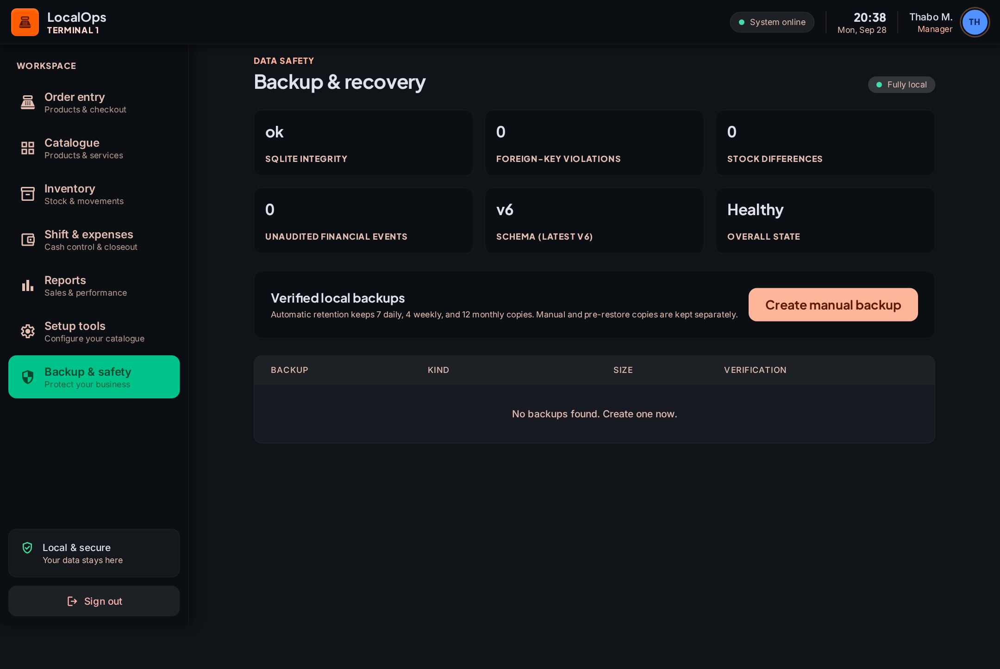
| Card | Healthy value |
|---|---|
| SQLite integrity | ok |
| Foreign-key violations | 0 |
| Stock differences | 0 |
| Unaudited financial events | 0 |
| Schema | Current version equals the latest version, e.g. v6 (latest v6) |
| Overall state | Healthy |
Never ignore a card that is not healthy, and never “try things” to fix it. Write the exact values down, make a backup if the button still works, stop non-essential work and call support.
The program also keeps automatic copies by itself: 7 daily, 4 weekly and 12 monthly. Manual and pre-restore copies are kept separately from those.
Restoring replaces the current data with the data from the backup. Everything recorded after that backup is not in the restored copy. Only do this with the owner’s instruction.
business.db with any other program.-wal or -shm files while LocalOps is running.Help
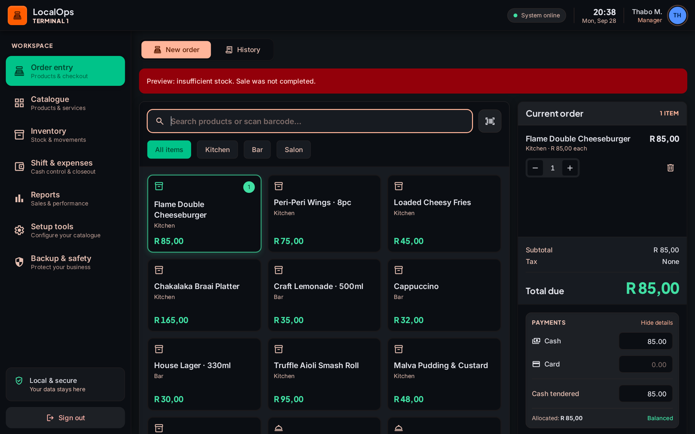
| Message | What to do |
|---|---|
| No local item matches “…” | The code is not on any item, or the item is not available to a department. Tap the item button instead and tell the manager. |
| Insufficient stock… | The ledger says there is not enough. Check the product and location, receive stock or do an authorised count, then retry. |
| Permission denied: … | Your account may not do that action. Ask an authorised person to do it. Never borrow a PIN. |
| Session missing or expired | Sign in again. Sales that were already completed are safe. |
| Enter a number with no more than 2 decimal places | Type money as 85.00 — digits, one full stop, two decimals. |
| Shift closed badge is red | Open the shift before selling. |
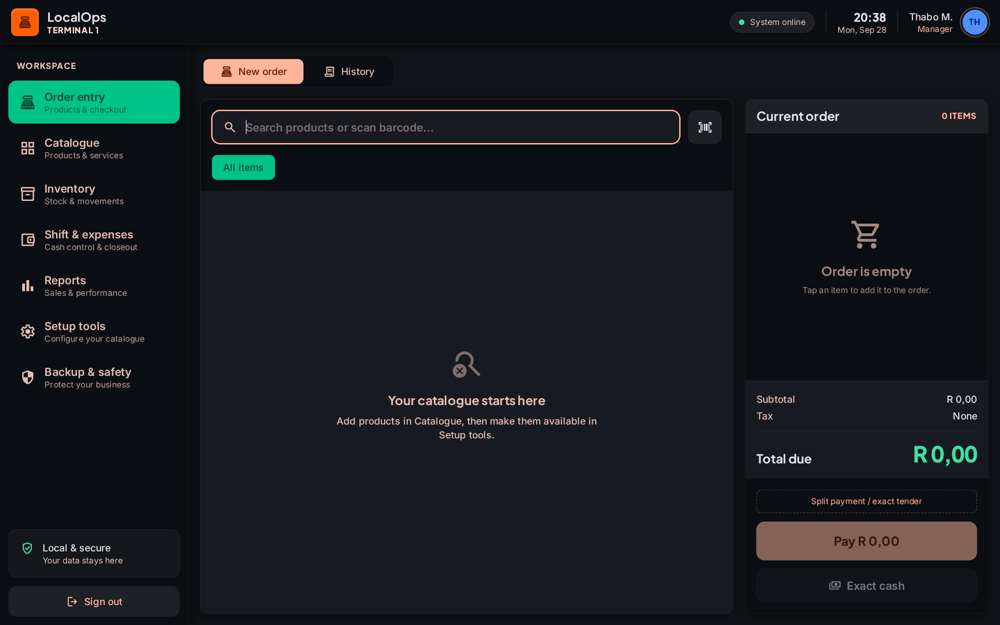
This means either nothing has been created in Catalogue, or nothing has been made available to a department in Setup tools. Both steps are needed. It is almost always the second one.
| Problem | First things to check |
|---|---|
| I cannot sign in | Right business and terminal? Username spelled correctly? PIN 4–12 digits? Locked out for five minutes? |
| The scanner does nothing | Is the cursor in the search bar? Press the barcode icon. Does the scanner send Enter? Test by typing the number and pressing Enter. |
| The Pay button stays grey | See section 8.4. |
| The receipt will not print | Check paper, power, cable and the Windows printer. The sale is already saved either way. |
| Transfer stock is switched off | The business has only one stock location. An administrator must add a second one. |
| I cannot record an expense | Open a shift and create at least one expense category. |
| Report figures look wrong | Check the From/To dates, then look at refunds, voids, expenses and shift variance separately. |
For trainers
A new teller can be trained on LocalOps POS in about 45 minutes, plus practice. Train on a real till, out of trading hours, and refund or void every practice sale afterwards.
| Time | Topic | Do this |
|---|---|---|
| 0–5 min | The four rules | Chapter 2. Explain that nothing is deleted and that everything is recorded under their name. |
| 5–10 min | Sign in, sign out | Let them sign in themselves. Make them sign out and in again twice. |
| 10–15 min | Screen tour | Point at the top strip, the menu and the order panel. Ask them to point back. |
| 15–20 min | Open the till | Count a real float together and open a shift. |
| 20–32 min | Sales | Exercises 1 to 4 below. |
| 32–38 min | Refunds | Exercise 5. Explain Restock properly. |
| 38–45 min | Close the shift | Count, close, look at the variance together. |
The trainee is ready for the floor alone when they can do all of this without help:
Trainee name: ______________________________ Trainer: ______________________________ Date: ______________
Routine
Print this page and stick it near the till
Money in boxes must equal Total due. · Print the receipt straight away. · Never share your PIN. · Report a shortage the same day.
| Need help? | Contact |
|---|---|
| Supervisor on duty | |
| Store manager / owner | |
| LocalOps support |
LocalOps POS user manual, edition 1.0. The screenshots in this manual were taken from LocalOps POS version 0.1.0 using a demonstration data set (Moko’s Lifestyle Centre). Your own screens will show your business name, your departments and your items.